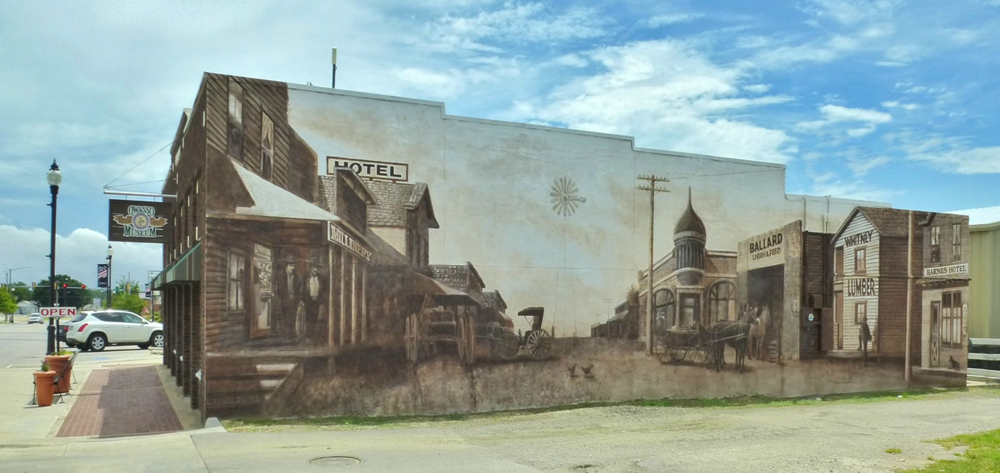
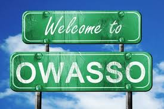
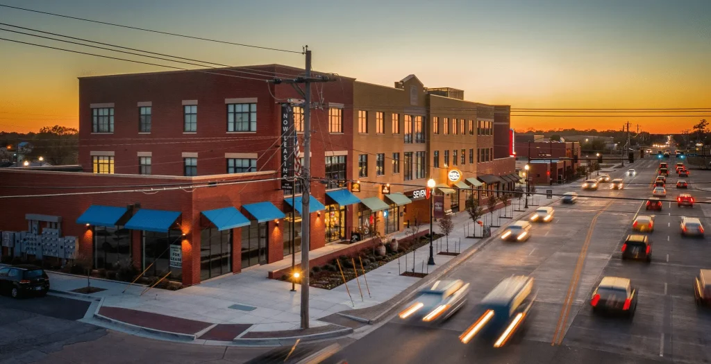
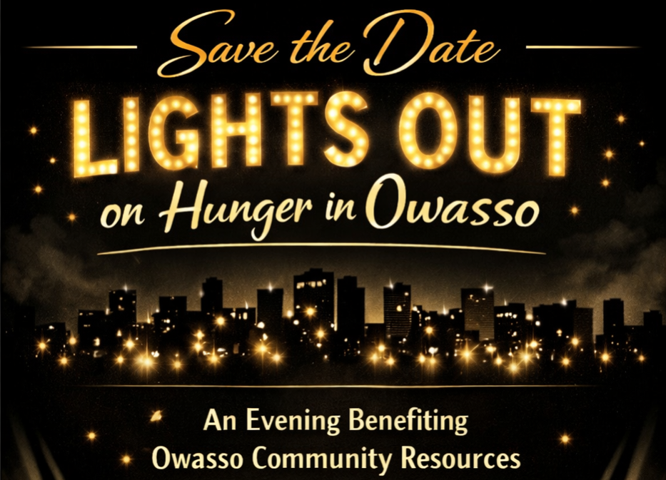
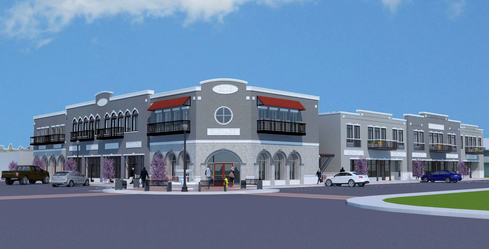

History and Heritage

Historic murals and landmarks celebrate Owasso’s roots and show how the city grew from a small settlement into a vibrant community.
Discover Owasso
A welcoming Oklahoma city with community spirit, local history, and everyday fun.
Owasso blends hometown warmth with modern conveniences. This website introduces visitors to the city’s history, gathering places, and local experiences that make the community memorable.
Use this site to explore city highlights, answer a visitor survey, read common questions, and find contact details for planning a visit.


Historic murals and landmarks celebrate Owasso’s roots and show how the city grew from a small settlement into a vibrant community.

Local shops, restaurants, and gathering spots give residents and visitors a convenient place to eat, browse, and enjoy daily life.

Owasso’s parks and seasonal events bring families together for concerts, outdoor activities, and celebrations throughout the year.
The gallery below highlights several sides of Owasso. On a narrow screen, each image stacks vertically. On a wider screen, the images flow side by side.

